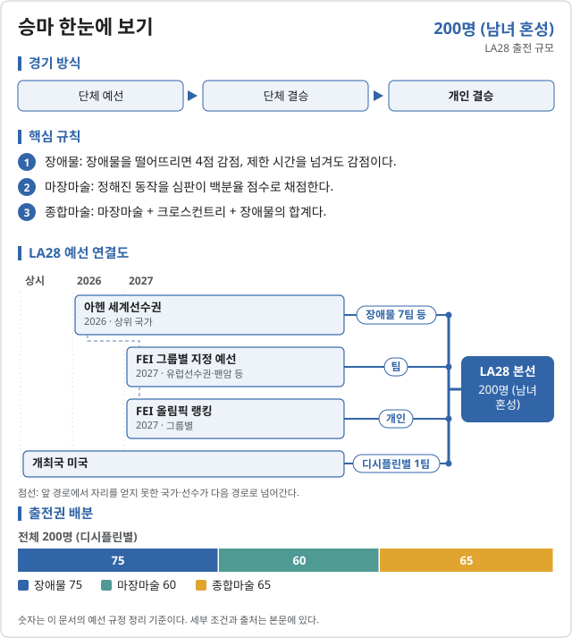

승마 (Equestrian)

LA28 출전 확정 2026-11-06 기준
| 국가 | 경로 | 비고 |
|---|---|---|
| 개최국 | ||
| 2026 아헨 세계선수권 | 금 | |
| 2026 아헨 세계선수권 | ||
| 2026 아헨 세계선수권 | 동 | |
| 2026 아헨 세계선수권 | ||
| 2026 아헨 세계선수권 | ||
| 2026 아헨 세계선수권 | ||
| 2026 아헨 세계선수권 |
| 국가 | 경로 | 비고 |
|---|---|---|
| 개최국 | ||
| 2026 아헨 세계선수권 | 금 | |
| 2026 아헨 세계선수권 | ||
| 2026 아헨 세계선수권 | ||
| 2026 아헨 세계선수권 | ||
| 2026 아헨 세계선수권 | ||
| 2026 아헨 세계선수권 | ||
| 2026 아헨 세계선수권 · G그룹 최상위 |
| 국가 | 경로 | 비고 |
|---|---|---|
| 개최국 | 아헨 동 | |
| 2026 아헨 세계선수권 | 금 | |
| 2026 아헨 세계선수권 | 은 | |
| 2026 아헨 세계선수권 | 4위 | |
| 2026 아헨 세계선수권 | ||
| 2026 아헨 세계선수권 | ||
| 2026 아헨 세계선수권 | ||
| 2026 아헨 세계선수권 |
출처: Horse & Hound · 마장마술 올림픽 출전권 · British Equestrian · 장애물 동메달과 출전권 · The Irish Field · 아일랜드 종합마술 4위 · Wikipedia · LA28 승마 예선
2026 주요 대회 결과 2026-11-07 09:23 KST
위키백과 대회 문서에서 자동으로 모은다. 대회 중에는 한 시간마다 새로 읽는다. 한국 선수가 있는 줄은 붉게 칠했다. 하계 실시간 전체 →
아이치·나고야 아시안게임 아이치·나고야 · 09.21~10.04 종료 결과 7/7종목 · 한국 금1 은1 동1
| 종목 | 금 | 은 | 동 |
|---|---|---|---|
| Medalists | |||
| 개인 dressage | |||
| 단체 dressage | |||
| 개인 eventing | |||
| 단체 eventing | |||
| 개인 jumping A | |||
| 개인 jumping B | |||
| 단체 jumping | |||
메달 순위:  중국 2-1-1 ·
중국 2-1-1 ·  사우디아라비아 2-1-1 ·
사우디아라비아 2-1-1 ·  대한민국 1-1-1 ·
대한민국 1-1-1 ·  태국 1-1-0 ·
태국 1-1-0 ·  카타르 1-0-1 ·
카타르 1-0-1 ·  아랍에미리트 0-2-0 ·
아랍에미리트 0-2-0 ·  일본 0-1-3
일본 0-1-3
출처: 위키백과 Equestrian events at the 2026 Asian Games · 2026-11-06 22:37 읽음
FEI 세계승마선수권 아헨 · 08.11~08.23 종료 결과 25/25종목 · 한국 금0 은0 동0
| 종목 | 금 | 은 | 동 |
|---|---|---|---|
| Medalists | |||
| 개인 special dressage | |||
| 개인 자유형 dressage | |||
| 단체 dressage | |||
| 개인 jumping | |||
| 단체 jumping | |||
| 개인 eventing | |||
| 단체 eventing | |||
| 개인 driving | |||
| 단체 driving | |||
| 남자 vaulting | |||
| 여자 vaulting | |||
| Pas de Deux | |||
| Squad vaulting | |||
| 단체 vaulting | |||
| 개인 para-dressage championship test grade I | |||
| 개인 para-dressage championship test grade II | |||
| 개인 para-dressage championship test grade III | |||
| 개인 para-dressage championship test grade IV | |||
| 개인 para-dressage championship test grade V | |||
| 개인 para-dressage 자유형 test grade I | |||
| 개인 para-dressage 자유형 test grade II | |||
| 개인 para-dressage 자유형 test grade III | |||
| 개인 para-dressage 자유형 test grade IV | |||
| 개인 para-dressage 자유형 test grade V | |||
| 단체 para-dressage | |||
메달 순위:  독일 7-5-8 ·
독일 7-5-8 ·  미국 6-0-2 ·
미국 6-0-2 ·  영국 4-4-5 ·
영국 4-4-5 ·  네덜란드 3-2-2 ·
네덜란드 3-2-2 ·  프랑스 2-3-0 ·
프랑스 2-3-0 ·  오스트레일리아 1-1-0 ·
오스트레일리아 1-1-0 ·  스위스 1-0-0 ·
스위스 1-0-0 ·  스웨덴 1-0-0
스웨덴 1-0-0
출처: 위키백과 2026 FEI World Championships · 2026-11-06 22:37 읽음
예선 규정
이벤트 및 출전 쿼터
3개 디시플린 단체·개인, 전체 200명이 출전한다. 남녀 혼성이며 쿼터는 단체·개인 모두 국가 올림픽위원회(NOC)에 배정된다. 단체 1팀은 3명이다.
| 디시플린 | 일반쿼터 | 개최국쿼터 | 보편성쿼터 | 합계 |
|---|---|---|---|---|
| 장애물 | 72 | 3 | 0 | 75 |
| 마장마술 | 57 | 3 | 0 | 60 |
| 종합마술 | 62 | 3 | 0 | 65 |
| 합계 | 191 | 9 | 0 | 200 |
개최국쿼터는 디시플린마다 미국 1팀(3명). 승마에는 보편성쿼터가 없다.
예선 경로
단체는 2026 아헨 세계선수권과 FEI 올림픽 그룹별 지정 예선으로, 개인은 2027년 FEI 올림픽 랭킹으로 정한다. 그룹 구분은 FEI 올림픽 그룹 문서에 있다.
장애물 · 혼성 단체·개인
장애물 선발 경로
75명 (20팀 60 + 개인 15) · FEI 규정 ↗
| 경로 | 쿼터 | 선발 방식 |
|---|---|---|
| 개최국 (미국) | 1팀 | [1] |
| 2026 아헨 세계선수권 | 7팀 | [2] |
| 2027 유럽선수권 (A·B그룹) | 3팀 | [3] |
| C그룹 지정 예선 | 2팀 | [4] |
| 2027 팬아메리칸게임 (D·E그룹) | 3팀 | [5] |
| F그룹 지정 예선 | 2팀 | [6] |
| G그룹 지정 예선 | 2팀 | [7] |
| 개인 · 그룹별 랭킹·팬암 | 14명 | [8] |
| 개인 · 종합 랭킹 | 1명 | [9] |
- [1]팀을 꾸리지 못하면 개인 1명을 낼 수 있다.
- [2]2026.08.11–23 아헨(독일). 독일·벨기에·영국·이탈리아·스위스·아일랜드·프랑스가 확보했다.
- [3]2027.08 바레험(벨기에) 유럽선수권에서 A·B그룹 상위 3팀(이미 확보한 팀 제외).
- [4]2027 C그룹 지정 대회(일정 미정) 상위 2팀.
- [5]2027.07.16–08.01 리마. D·E그룹 상위 3팀.
- [6]2027 F그룹 지정 대회(일정 미정) 상위 2팀.
- [7]2027 G그룹(동남아시아·오세아니아) 지정 대회(일정 미정) 상위 2팀.
- [8]단체 쿼터가 없는 국가만 대상. A·B·C·F·G그룹 랭킹 상위 2명씩 10명, 팬암 개인 상위 3명, D·E 랭킹 1명. 국가당 개인 1명.
- [9]FEI 올림픽 랭킹 종합 최상위(이미 확보한 국가 제외) 1명. 랭킹은 2027.01.01–12.31 최고 15개 성적.
마장마술 · 혼성 단체·개인
마장마술 선발 경로
60명 (15팀 45 + 개인 15) · FEI 규정 ↗
| 경로 | 쿼터 | 선발 방식 |
|---|---|---|
| 개최국 (미국) | 1팀 | [1] |
| 2026 아헨 세계선수권 | 6팀 | [2] |
| 2027 유럽선수권 (A·B그룹) | 3팀 | [3] |
| C그룹 지정 예선 | 1팀 | [4] |
| 2027 팬아메리칸게임 (D·E그룹) | 2팀 | [5] |
| F그룹 (아헨 또는 2027 지정 예선) | 1팀 | [6] |
| G그룹 (아헨 또는 2027 지정 예선) | 1팀 | [7] |
| 개인 · 그룹별 랭킹·팬암 | 14명 | [8] |
| 개인 · 종합 랭킹 | 1명 | [9] |
- [1]팀을 꾸리지 못하면 개인 1명을 낼 수 있다.
- [2]2026.08 아헨. 독일·영국·덴마크·벨기에·네덜란드·스웨덴이 확보했다.
- [3]2027.08 란보엘(덴마크) 유럽선수권 A·B그룹 상위 3팀.
- [4]2027 C그룹 지정 대회 1팀.
- [5]2027 리마 팬암 D·E그룹 상위 2팀.
- [6]아헨 세계선수권 F그룹 최상위 팀, 채우지 못하면 2027 F그룹 지정 대회.
- [7]아헨 세계선수권 G그룹 최상위 팀, 채우지 못하면 2027 G그룹 지정 대회.
- [8]단체 쿼터가 없는 국가만 대상. A·B·C·F·G그룹 랭킹 상위 2명씩 10명, 팬암 개인 2명, D·E 랭킹 2명. 국가당 개인 1명.
- [9]FEI 올림픽 랭킹 종합 순위로 1명. 랭킹은 2027년 최고 4개 성적.
종합마술 · 혼성 단체·개인
종합마술 선발 경로
65명 (16팀 48 + 개인 17) · FEI 규정 ↗
| 경로 | 쿼터 | 선발 방식 |
|---|---|---|
| 개최국 (미국) | 1팀 | [1] |
| 2026 아헨 세계선수권 | 7팀 | [2] |
| 2027 유럽선수권 (A·B그룹) | 2팀 | [3] |
| C그룹 지정 예선 | 1팀 | [4] |
| 2027 팬아메리칸게임 (D·E그룹) | 2팀 | [5] |
| F·G그룹 지정 예선 | 2팀 | [6] |
| 2027 네이션스컵 시리즈 | 1팀 | [7] |
| 개인 · 그룹별 랭킹 | 14명 | [8] |
| 개인 · 종합 랭킹 | 3명 | [9] |
- [1]팀을 꾸리지 못하면 개인 1~2명을 낼 수 있다.
- [2]2026.08.12–16 아헨. 영국·독일·아일랜드·스위스·뉴질랜드·스웨덴·벨기에가 확보했다.
- [3]2027.09.14–19 아방슈(스위스) 유럽선수권 A·B그룹 상위 2팀.
- [4]2027 C그룹 지정 대회 1팀.
- [5]2027 리마 팬암 D·E그룹 상위 2팀.
- [6]2027 F·G그룹 공동 지정 대회 상위 2팀.
- [7]2027 FEI 종합마술 네이션스컵 올림픽 쿼터 순위 1위 팀.
- [8]단체 쿼터가 없는 국가만 대상. A·B·C·F·G그룹 랭킹 상위 2명씩 10명, D·E 합산 4명. 국가당 개인 최대 2명.
- [9]FEI 올림픽 랭킹 종합 순위로 3명. 랭킹은 2027년 최고 4개 성적.
개최국·보편성 쿼터
개최국 미국에는 디시플린마다 단체 1팀(3명)을 보장한다. 팀을 꾸리지 못하면 개인(종합마술 1~2명, 나머지 1명)을 낼 수 있다.
보편성 쿼터는 없다. 그룹별 개인 배정이 대륙 대표를 보장하는 역할을 한다.
참가 자격
올림픽 헌장(제41조 국적, 제43조 세계반도핑규약 및 경기 조작 방지 규정), IOC 참가 조건 및 FEI 규정을 충족해야 한다.
| 디시플린 | 선수 출생 | 말 출생 | 최소 자격(MER) |
|---|---|---|---|
| 장애물 | 2010.12.31 이전 (18세) | 2020.12.31 이전 (8세) | 선수·말 조합으로 지정 대회 MER 충족 |
| 마장마술 | 2012.12.31 이전 (16세) | 2020.12.31 이전 (8세) | 지정 대회에서 67% 이상 2회 |
| 종합마술 | 2010.12.31 이전 (18세) | 2019.12.31 이전 (9세) | CCI5*-L 1회 등 MER 결과 |
MER 인정 기간은 2027.01.01–2028.06.11. 쿼터는 단체·개인 모두 국가 올림픽위원회(NOC)에 배정되며, 단체 쿼터를 받은 국가는 개인 쿼터를 따로 받을 수 없다.
예선 일정
예선 및 대회 일정
2026년 8월 아헨 세계선수권에서 단체 20팀(장애물 7·마장마술 6·종합마술 7)이 이미 정해졌다. 나머지 예선은 2027년에 열린다.
| 날짜 | 일정 |
|---|---|
| 2026.08.11–23 | FEI 세계선수권 아헨 (장애물 7·마장마술 6·종합마술 7팀 확정) |
| 2026.12.15 | FEI 올림픽 랭킹 규정 발표 (마장마술·종합마술·장애물) |
| 2027.01.01–12.31 | FEI 올림픽 랭킹 집계 · MER 인정 시작 |
| 2027.07.16–08.01 | 팬아메리칸게임 리마 (D·E그룹) |
| 2027.08 | 유럽선수권 장애물(바레험)·마장마술(란보엘) |
| 2027.09.14–19 | 유럽선수권 종합마술(아방슈) |
| 2027 | C·F·G그룹 지정 예선 (일정 미정) |
| 2028.01.10–20 | 단체 쿼터 확인서 제출 · 통보 · 확정 |
| 2028.02.01–08 | 개인 쿼터 통보 · 확정 |
| 2028.06.11 | MER 마감 |
| 2028.06.26 | LA28 스포츠 엔트리 마감 |
| 2028.07.14–30 | LA28 올림픽 |
직전 올림픽 메달리스트
2024 파리 올림픽
| 세부종목 | 금 | 은 | 동 |
|---|---|---|---|
| 마장마술 개인 | Jessica von Bredow-Werndl (GER) | Isabell Werth (GER) | Charlotte Fry (GBR) |
| 마장마술 단체 | GER | DEN | GBR |
| 종합마술 개인 | Michael Jung (GER) | Christopher Burton (AUS) | Laura Collett (GBR) |
| 종합마술 단체 | GBR | FRA | JPN |
| 장애물 개인 | Christian Kukuk (GER) | Steve Guerdat (SUI) | Maikel van der Vleuten (NED) |
| 장애물 단체 | Ben Maher·Harry Charles·Scott Brash (GBR) | Laura Kraut·Karl Cook·McLain Ward (USA) | Simon Delestre·Olivier Perreau·Julien Epaillard (FRA) |
대한민국
한국 출전 전망
2026-10-04 기준 참고현재 성적을 LA28 규정에 단순 적용한 참고치이며 2028 확정 전망이 아님.
인원 범위 미산정 · G그룹 경로가 핵심
2026 아헨 세계선수권에서 아시아 팀은 단체 쿼터를 얻지 못했다. 한국이 속한 G그룹(동남아시아·오세아니아)의 2027 지정 예선과 FEI 올림픽 랭킹(2027년 집계)이 남은 경로다. 아시안게임은 예선 경로가 아니다.
| 선수·팀 | 공개 성적 | 근거 |
|---|---|---|
| 남동헌 | 아시안게임 마장마술 개인 금 (75.190%) | 노컷뉴스 |
| 마장마술 단체 | 아시안게임 은 | 노컷뉴스 |
| 종합마술 단체 | 아시안게임 동 (12년 만의 메달) | 한국일보 · 2026.09.23 |
마장마술: G그룹 단체 1팀은 아헨에서 채워지지 않으면 2027 G그룹 지정 예선으로 넘어간다. 개인은 G그룹 랭킹 상위 2명에게 돌아간다. 아시안게임 개인 금메달을 딴 남동헌이 2027 랭킹 대회에 나서는 것이 첫 단계다.
장애물·종합마술: G그룹 지정 예선에 단체 2팀(종합마술은 F·G 공동 2팀), 그룹 랭킹에 개인 2명이 있다. 일본·중국·호주·뉴질랜드와 같은 그룹이라 경쟁이 크다.
자료 기준: 2026 아헨 세계선수권 쿼터 결과와 2026 아시안게임 승마 결과. G그룹 소속은 FEI 올림픽 그룹 구분에 따른 것이다.
승마 · 올림픽예선 | 규정 확인 2026.10.04 · 한국 전망 기준 2026.10.04
각주
외부 링크
공식 근거
- FEI · LA28 Qualification System, Jumping (PDF, 2026.09.03)
- FEI · LA28 Qualification System, Dressage (PDF, 2026.09.03)
- FEI · LA28 Qualification System, Eventing (PDF, 2026.09.03)
- Olympics.com · 아헨 장애물 단체 7팀 쿼터 (2026.08.22)
- Olympics.com · 아헨 마장마술 단체 6팀 쿼터 (2026.08.12)
- 노컷뉴스 · 남동헌 아시안게임 마장마술 금
- 한국일보 · 종합마술 단체 동메달 (2026.09.23)
규정 확인일: 2026.10.04. IOC가 게시한 FEI 원문 PDF 3종(모두 Version as of 3 September 2026)을 기준으로 정리했다. 승마는 남녀 구분 없는 혼성 종목이다. 본 문서는 비공식 한국어 요약이며 최종 적용은 FEI 공지를 따른다.